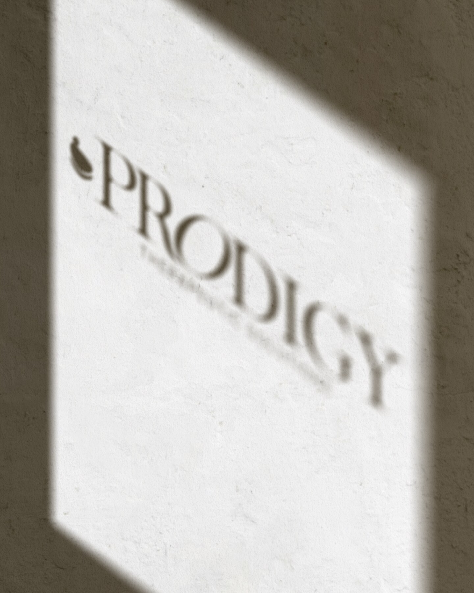
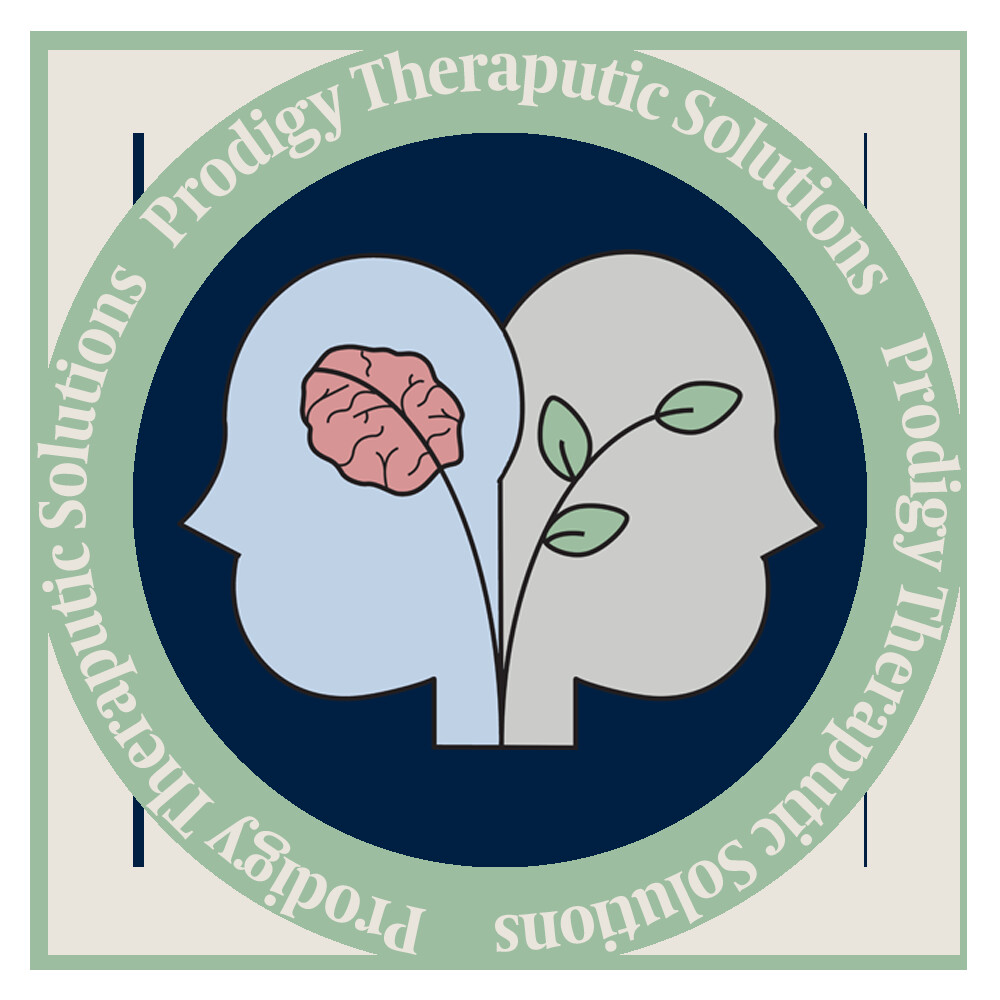
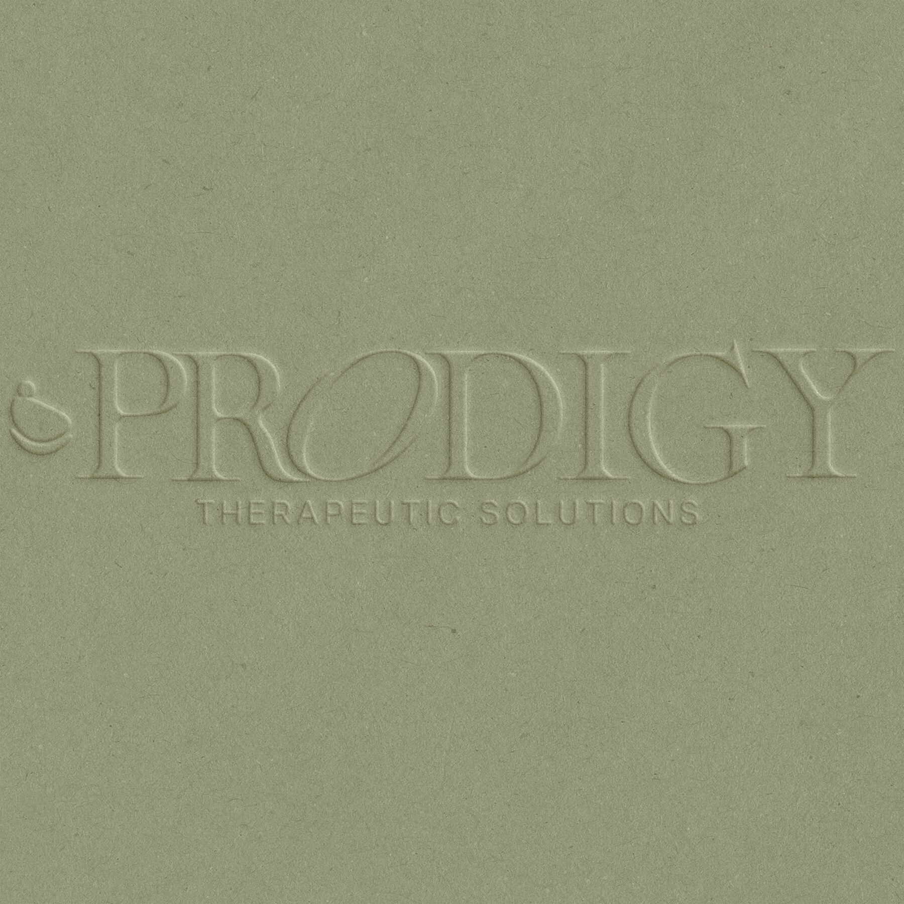
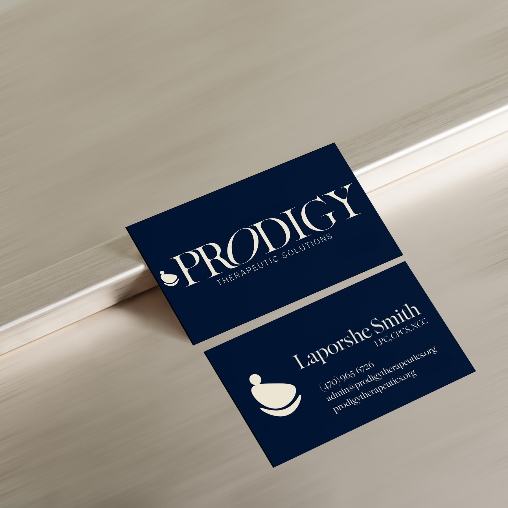
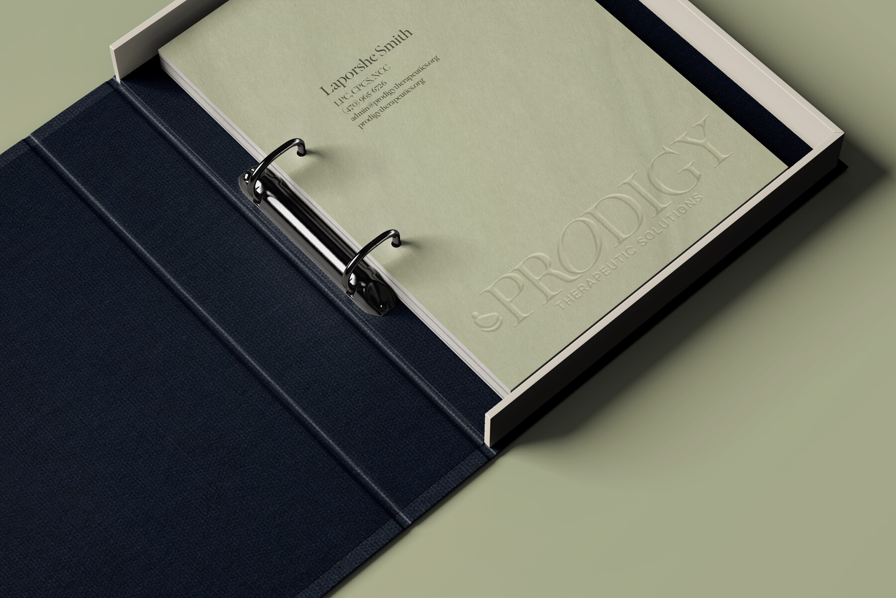
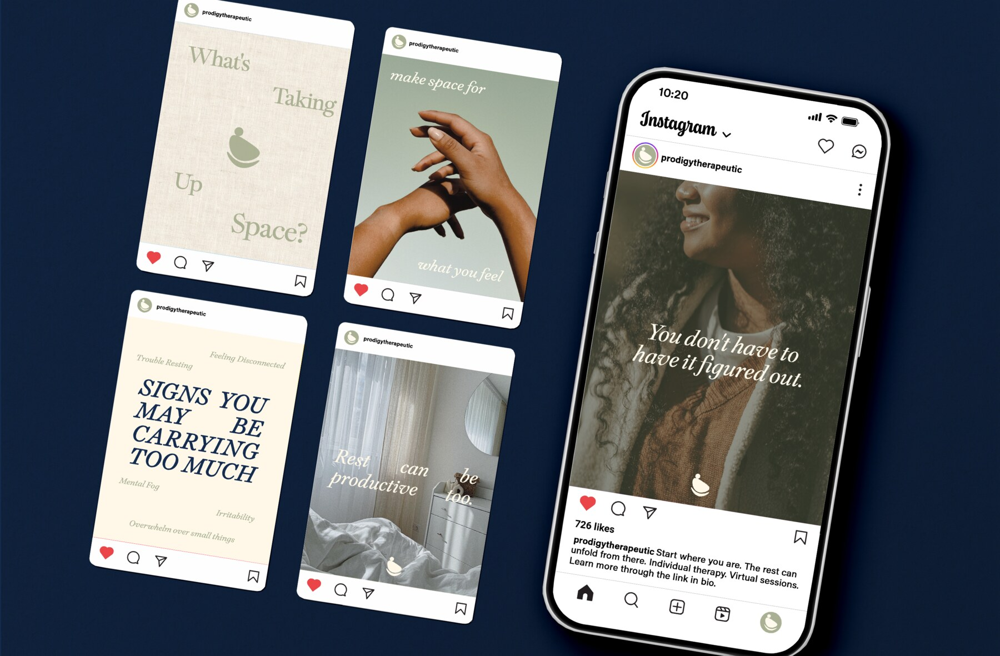
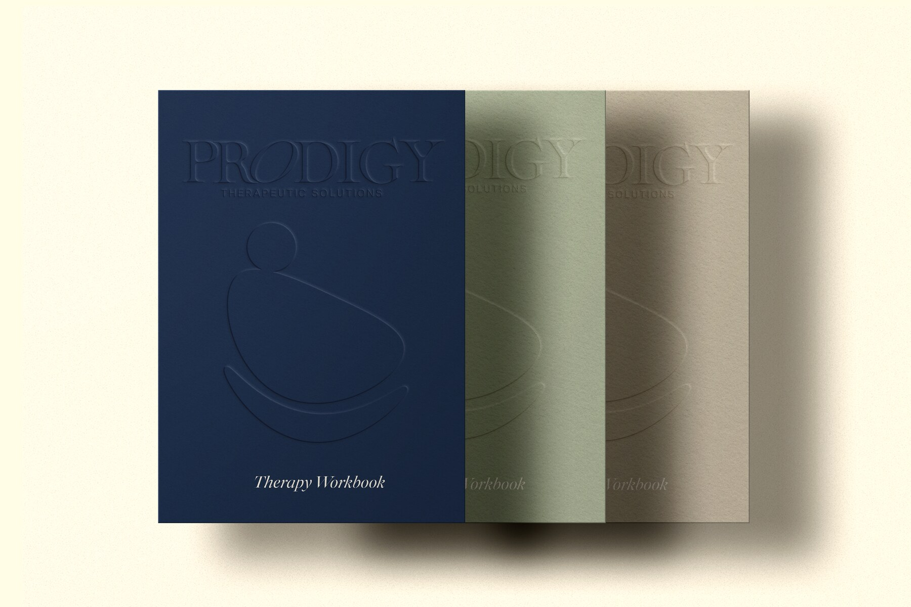

A thoughtful redesign and expanded rebranding that reimagines Prodigy’s original logo as a calm, cohesive identity built for connection and growth.
Scope
Brand redesign Visual identity Art direction
Deliverables
Print collateral Workbook system Social + digital

the project
Not starting over. Building it out.
This project began as a redesign of the original Prodigy Therapeutic Solutions logo and grew into a complete reimagining of the brand. The existing identity already carried meaningful ideas around the mind, personal growth, and therapeutic support. The challenge was to preserve that heart while creating a system that felt more refined, reassuring, and adaptable.
The expanded identity translates those ideas into a simplified symbol, an elegant wordmark, a grounded navy-and-sage palette, and a warmer editorial voice. The result feels credible enough for a clinical practice while remaining personal, calm, and accessible to the people it serves.
Identity evolution
Preserve the meaning. Refine the expression.
Original Prodigy logo

same heart → clearer form
The original mark visualized the relationship between mental health and growth through two profiles, a brain, and a plant. For the redesign, I distilled those overlapping ideas into one flexible symbol: a person held within a sweeping, supportive form.
The simplified silhouette retains a sense of care and progress without relying on several separate illustrations. It scales cleanly, reproduces consistently, and can sit confidently beside the new high-contrast wordmark.
Reimagined identity



Behind the work
A system designed to hold space.
01
Audit + simplify
I began by identifying what was essential in the original identity: support, inner growth, and the relationship between mind and wellbeing. Removing extra visual information made those ideas easier to understand and gave the mark the flexibility a growing practice needs.
02
Balance trust + warmth
Deep navy creates stability and professional trust, while soft sage and warm neutrals keep the system from feeling institutional. Refined typography adds maturity, and generous spacing gives sensitive messages room to breathe.
03
Expand the experience
The redesign became a broader brand system across business cards, environmental moments, educational materials, therapy workbooks, organizational tools, and social content. Each piece uses the same quiet visual language so clients receive a consistent sense of care at every touchpoint.


end of project
Care, made visible.
MAKE SPACE FOR WHAT YOU FEEL ✦ THOUGHTFUL CARE, THOUGHTFUL DESIGN ✦ MAKE SPACE FOR WHAT YOU FEEL ✦